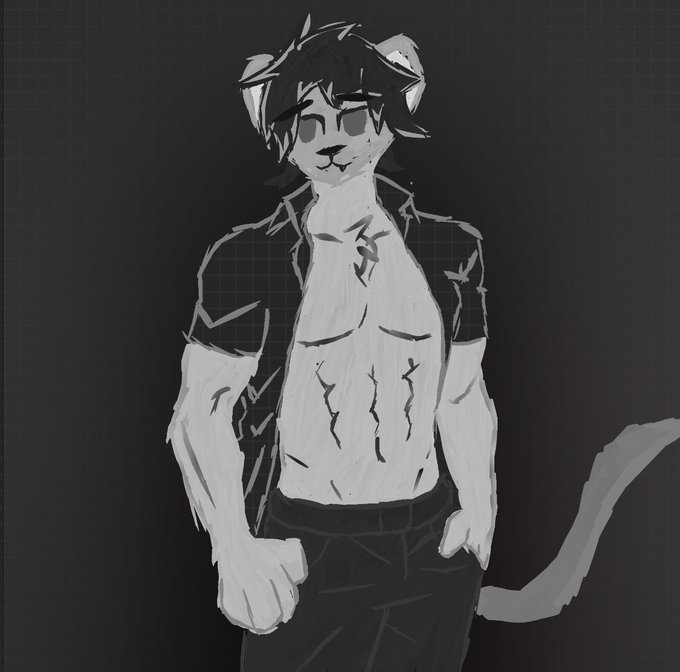

(v0.9.1)-スナップショット
- Added a loading spinner for the gallery
- Testing out a feature where you can jump from an image in the wiki to the gallery to see credits. (Only works for Leo)
- Using fallbacks again for images instead of locally storing them. Well, at least for the gallery.
- Updated Leo from cat to leopard.